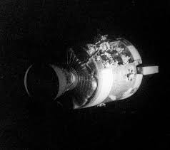

Apollo 13 was intended to be the third mission to land humans on the Moon. Launched on April 11, 1970, the crew consisted of Commander James Lovell, Command Module Pilot Jack Swigert, and Lunar Module Pilot Fred Haise.
Although the mission never reached the lunar surface, it became one of the most famous space missions in history because of the remarkable effort required to bring the crew safely home after a catastrophic accident.
The mission began normally. Apollo 13 launched successfully and entered its planned trajectory toward the Moon. For the first two days, the spacecraft operated as expected, and the crew carried out routine tasks.
On April 13, approximately 200,000 miles from Earth, mission control requested that the crew perform a routine procedure involving the spacecraft's oxygen tanks. Moments later, a violent explosion occurred inside the Service Module.
The explosion disabled critical systems and caused oxygen supplies to rapidly escape into space.
The accident immediately forced NASA to cancel the planned lunar landing. Without sufficient oxygen and electrical power, the Command Module could no longer support the crew for the remainder of the mission.
Instead, the astronauts moved into the Lunar Module Aquarius, which served as an emergency lifeboat. Engineers and flight controllers worked around the clock to develop procedures that would conserve power, maintain life support, and guide the spacecraft safely home.
The crew endured cold temperatures, limited water supplies, and difficult living conditions while following newly developed emergency procedures.
One of the mission's most famous challenges involved removing carbon dioxide from the spacecraft. The available filters were not designed to fit the Lunar Module's systems.
Engineers on Earth devised an improvised solution using materials already available aboard the spacecraft, including plastic bags, cardboard, tape, and hoses. The astronauts successfully assembled the device and restored safe air quality.
The mission became a powerful example of teamwork, creativity, and problem-solving under extreme pressure.
Rather than landing on the Moon, Apollo 13 used the Moon's gravity to swing around the far side and begin the return trip to Earth.
As the spacecraft approached Earth, the crew reactivated the Command Module after days of shutdown. Mission controllers were uncertain whether the damaged spacecraft would survive reentry.
On April 17, 1970, Apollo 13 safely splashed down in the Pacific Ocean. The successful recovery was celebrated around the world as one of NASA's greatest accomplishments.
Although Apollo 13 did not achieve its original objective, many people consider it one of the most successful "failed" missions in history. The safe return of the crew demonstrated the skill of the astronauts, engineers, and flight controllers who worked together during the crisis.
The mission led to improvements in spacecraft design and safety procedures while becoming a lasting symbol of resilience and human ingenuity. Its story continues to inspire generations of scientists, engineers, and explorers.